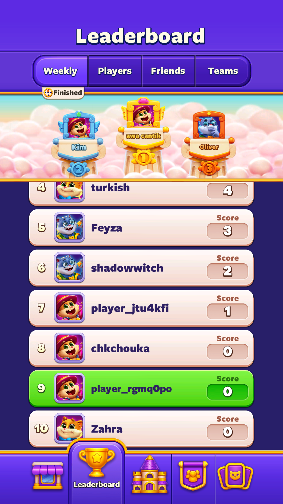
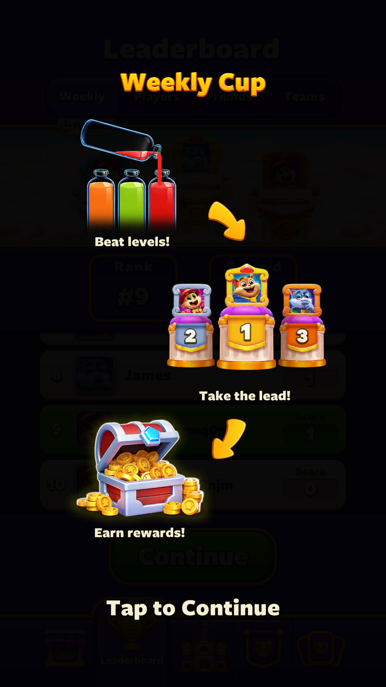
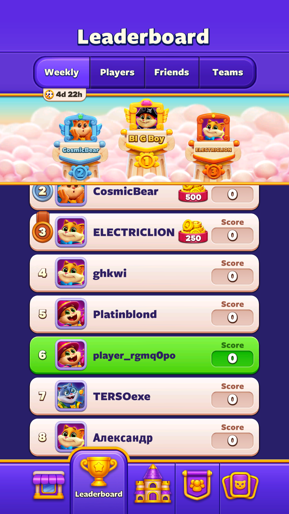

Giải đấu tuần (Weekly Tournament)
Một cuộc đua nền dễ hiểu: mỗi thắng là một điểm và kết quả tuần nối thẳng sang lượt kế tiếp.
1 UC có nhánh liên quan tới case quan sát. Chưa có kết luận toàn bộ tính năng hoặc mọi UC đã pass. Xem bằng chứng và phần còn thiếu.
Thiết kế chi tiết
Tóm tắt thiết kế
Một cuộc đua nền dễ hiểu: mỗi thắng là một điểm và kết quả tuần nối thẳng sang lượt kế tiếp.
Thắng level → tăng điểm tuần → xem rank → hết tuần → nhận thưởng và bảng mới.
Diễn giải thiết kế từ nguồn đã đối chiếu; outcome là expected, không phải lượt playtest mới. Các giá trị default/native có build riêng, không tự coi đang hiệu lực production.
4 ảnh chụp có nguồn · ảnh hiện ngay trong khung, bấm để mở ảnh gốc. Màu nhãn phân biệt playtest, lịch sử và ngữ cảnh.



Luồng người chơi từng bước
- 01
Ghi một điểm
Người chơi và hệ thốngThắng một level.
Điều kiện / luật: Mỗi chiến thắng cho 1 điểm theo luật nguồn; không dùng hệ số của Magic Streak.
Kết quả theo đặc tả: Điểm được lưu để đẩy lên server theo luồng.
- 02
Đọc kết quả
Người chơi và hệ thốngMở bảng khi giải đã kết thúc.
Điều kiện / luật: Bảng có field IsBot; xem rank trong cache không chứng minh đã làm mới từ server.
Kết quả theo đặc tả: Đọc kết quả của giải cũ trước khi chuyển tuần.
- 03
Nhận quà và sang giải mới
Người chơi và hệ thốngClaim phần thưởng theo hạng.
Điều kiện / luật: Top 3 mặc định nhận 1.000/500/250 coin; request claim trả cả bảng tuần mới.
Kết quả theo đặc tả: Tách phần thưởng giải cũ và danh tính giải mới.
Quy tắc cần nắm
| Quy tắc | Hành vi theo nguồn | Căn cứ |
|---|---|---|
| Ghi một điểm | Mỗi chiến thắng cho 1 điểm theo luật nguồn; không dùng hệ số của Magic Streak. | |
| Đọc kết quả | Bảng có field IsBot; xem rank trong cache không chứng minh đã làm mới từ server. | |
| Nhận quà và sang giải mới | Top 3 mặc định nhận 1.000/500/250 coin; request claim trả cả bảng tuần mới. |
Số liệu & phần thưởng
Phần thưởng
PHẦN THƯỞNG THEO HẠNG (WeeklyTournamentConfigModel.json)
| Mốc | Điều kiện | Phần thưởng |
|---|---|---|
| Hạng 1 | Đứng đầu bảng khi giải kết thúc |  1000 coin 1 cúp (WinCount 1) 1000 coin 1 cúp (WinCount 1) |
| Hạng 2 | Đứng thứ hai |  500Coin 500Coin |
| Hạng 3 | Đứng thứ ba | 250Coin |
| Hạng 4 trở đi | Ngoài top 3 | Không có phần thưởng |
HUY CHƯƠNG (LeaderboardMedalType)
| Mã | Huy chương | Áp dụng cho |
|---|---|---|
| 0 | None | Hạng 4 trở đi |
| 1 | Golden | Hạng 1 |
| 2 | Silver | Hạng 2 |
| 3 | Bronze | Hạng 3 |
TRẠNG THÁI GIẢI (WeeklyTournamentStateType)
| Mã | Trạng thái | Ý nghĩa |
|---|---|---|
| 0 | InProgress | Giải đang chạy điểm được cộng |
| 1 | Result | Giải kết thúc chờ nhận thưởng |
| 2 | Disable | IsTournamentEnable = false |
| 3 | InsufficientLevel | Level dưới FirstLevelToShow |
| 4 | NoCachedTournament | Chưa có bảng trong cache |
| 5 | NotFinishedAtBackendResponseButTimeIsUp | Client hết giờ nhưng server chưa báo kết thúc |
| 6 | FinishedAtBackendResponseButTimeIsNotUp | Server báo kết thúc nhưng client chưa hết giờ |
| 7 | ResultIntroduced | Kết quả đã được hiển thị |
Phần thưởng theo code
| Ngữ cảnh | Phần thưởng | Evidence |
|---|---|---|
| Hạng 1 cuối tuần | 1000 Coin 1 WinCount (cúp hồ sơ) | WeeklyTournamentService.GetRewardAmountByRank; WeeklyTournamentService.TryIncreaseWinCount |
| Hạng 2 | 500Coin | WeeklyTournamentService.GetRewardAmountByRank |
| Hạng 3 | 250Coin | WeeklyTournamentService.GetRewardAmountByRank |
| Hạng 4 trở đi | Không có (GetRewardAmountByRank trả 0) | WeeklyTournamentService.GetRewardAmountByRank |
Số liệu chính
| Chỉ số | Giá trị | Nguồn |
|---|---|---|
| Level mở khoá | 40 | WeeklyTournamentConfigModel.FirstLevelToShow |
| Trạng thái bật/tắt mặc định | true (bật) | WeeklyTournamentConfigModel.IsTournamentEnable |
| Điểm mỗi level thắng | 1 | WeeklyTournamentService.IncreaseScoreAndManipulateCachedLeaderboard |
| Coin hạng 1 | 1000 | Rewards.FirstRankCoinRewardAmount |
| Coin hạng 2 | 500 | Rewards.SecondRankCoinRewardAmount |
| Coin hạng 3 | 250 | Rewards.ThirdRankCoinRewardAmount |
| Coin hạng 4 trở đi | 0 | WeeklyTournamentService.GetRewardAmountByRank |
| Loại tiền tệ thưởng | CurrencyType 1 (Coin) | WeeklyTournamentService.TryGetTournamentReward |
| Điều kiện tăng WinCount | rank == 1 | WeeklyTournamentService.TryIncreaseWinCount |
| Tự mở bảng kết quả khi về lobby | true | ShouldOpenAutomaticallyOnLobbyReturnOnResult |
| Tự mở bảng kết quả khi mở app | true | ShouldOpenAutomaticallyOnSessionStartOnResult |
| Số trạng thái giải | 8 (InProgress=0 … ResultIntroduced=7) | WeeklyTournamentStateType |
| Số loại huy chương | 4 (None=0, Golden=1, Silver=2, Bronze=3) | LeaderboardMedalType |
| Id thông báo kết thúc giải | 1124 | WeeklyTournamentEndNotificationSo.Id |
| Tiêu đề thông báo | "Weekly Tournament Ended!" | WeeklyTournamentEndNotificationSo.Title |
| Nội dung thông báo | "Check your final ranking and rewards now!" | WeeklyTournamentEndNotificationSo.Message |
| Placeholder xuống dòng trong thông báo | ' NEWLINE ' | WeeklyTournamentService.OnNewTournamentStarted |
| Điểm khi bắt đầu giải mới | Score = 0, LastSeenRank = -1 | WeeklyTournamentService.ResetScore / OnNewTournamentStarted |
| Tên khối sync | WeeklyTournamentSyncModel | WeeklyTournamentDataService.GetSyncName |
| Số prefab dòng bảng xếp hạng | 1 (Id 0, InitialSize 0) | WeeklyTournamentLeaderboardViewFactory._factoryPrefabs |
| Số người chơi mỗi bảng và tỉ lệ bot | Do server quyết định (server) | WeeklyGetLeaderboardResponse.Players |
| Độ dài chu kỳ giải | Theo startTime/finishTime từ server (server) | WeeklyGetLeaderboardResponse |
Các quyết định trong luồng
| Tình huống | Cách xử lý theo nguồn | Căn cứ |
|---|---|---|
| Vì sao claim là một bước chuyển vòng đời? | Request vừa xử lý quà cũ vừa lấy bảng mới; retry cần tránh gán điểm của giải cũ sang tuần tiếp theo. | Suy luận thiết kế từ cơ chế có nguồn, chưa đo hiệu quả. |
Nhánh lỗi và phục hồi
| Điều kiện | Hành vi mong đợi | Phạm vi đã kiểm |
|---|---|---|
| Gián đoạn hoặc kết thúc Giải đấu tuần (Weekly) | Xem bảng cache khi offline không phải refresh thành công. Round2 chỉ kiểm nhánh bảng xếp hạng, chưa claim thưởng tuần. | Theo source và UC trong dossier; các dependency backend/sync/RNG vẫn cần kiểm riêng. |
Nhận định & vận dụng
Request vừa xử lý quà cũ vừa lấy bảng mới; retry cần tránh gán điểm của giải cũ sang tuần tiếp theo.
Phân tích thiết kế, không phải kết quả đo cohort.
Ảnh chụp bổ sung & nguồn bằng chứng
Mô tả trạng thái hoặc bước nhìn thấy trong ảnh và ngữ cảnh case; không nâng preview, cache hay lỗi thành grant, online hoặc full UC pass.
Không coi ảnh lịch sử hoặc ảnh ép bật bằng fixture là trạng thái production hiện tại.
Những ảnh còn lại của tính năng được giữ mở sẵn bên dưới. Các ảnh đã đặt ở phần tóm tắt hoặc bước liên quan không lặp lại trong gallery này.



Case đầy đủ: expected, actual và ledger · Ảnh lịch sử và tài nguyên gốc
Tổng quan & điều kiện mở
Mô tả
- Weekly Tournament là bảng xếp hạng thi đua theo tuần, chạy liên tục và tự động lặp lại.
- Mỗi level thắng cộng 1 điểm vào bảng xếp hạng tuần của người chơi; thua không bị trừ điểm.
- Bảng gồm cả người chơi thật lẫn bot, phân biệt bằng cờ IsBot trong dữ liệu người chơi.
- Khi tuần kết thúc, top 3 nhận coin: 1000 cho hạng 1, 500 cho hạng 2, 250 cho hạng 3; từ hạng 4 không có thưởng.
- Chỉ nhà vô địch (hạng 1) mới được cộng WinCount — số cúp hiển thị trên hồ sơ.
- Nhận thưởng đồng thời là hành động claim: backend trả luôn bảng của giải tuần mới trong cùng một request.
- Điểm được cộng ngay ở client (optimistic) và sắp xếp lại bảng cache để UI không nhảy số.
- Top 3 được gắn huy chương vàng, bạc, đồng; các hạng còn lại không có huy chương.
- Bảng kết quả tự mở khi về lobby hoặc khi mở app để người chơi không bỏ lỡ thưởng.
- Có thông báo cục bộ nhắc 'Weekly Tournament Ended!' đúng thời điểm giải kết thúc.
Mở khóa & điểm vào
WeeklyTournamentStateService.IsUnlocked()/IsVisible(): WeeklyTournamentConfigModel.IsTournamentEnable == true && level người chơi >= FirstLevelToShow. Client default: IsTournamentEnable = true, FirstLevelToShow = 40 (Resources/defaultconfigs/WeeklyTournamentConfigModel.json). Nếu chưa đủ level → WeeklyTournamentStateType.InsufficientLevel(3); nếu tắt → Disable(2); nếu chưa có bảng cache → NoCachedTournament(4).
Điểm vào:
- Nút Leaderboard / cúp ở lobby (WeeklyTournamentLeaderboardController)
- WeeklyNewFeatureAlertView — highlight lần đầu mở khóa (ShouldShowNewFeatureAlertView)
- WeeklyTournamentHomeWelcomingCommand — chèn vào chuỗi welcome khi vào Home
- Tự mở bảng kết quả khi về lobby (ShouldOpenAutomaticallyOnLobbyReturnOnResult) hoặc khi mở app (ShouldOpenAutomaticallyOnSessionStartOnResult)
- WeeklyTournamentInfoPopup — nút info giải thích luật
- Local notification WeeklyTournamentEndNotificationSo (Id 1124) khi giải kết thúc
Các sự kiện liên quan
Luồng chi tiết theo nguồn
Cách hoạt động
- Kiểm tra mở khoá: cần IsTournamentEnable = true và level ≥ 40; thiếu level thì trạng thái InsufficientLevel(3).
- Lần đầu mở khoá, WeeklyNewFeatureAlertView highlight tính năng cho tới khi người chơi xem.
- Lấy bảng: gọi /v1/get-weekly-leaderboard, nhận về tournamentID, danh sách người chơi, startTime, finishTime, isClaimed, isFinished.
- Cache bảng rồi trộn điểm local chưa đồng bộ vào để hiển thị nhất quán (ManipulateLeaderboardResponse).
- Thắng level: điểm tăng 1 và bảng cache được sắp xếp lại ngay tại client, thứ hạng có thể nhảy lên tức thì.
- Đẩy điểm: gửi /v1/set-weekly-tournament-points với payload {progress, points, tournament_id}.
- Đồng hồ đếm ngược tới finishTime chạy mỗi giây khi mở bảng; ở trạng thái Result thì đồng hồ bị ẩn.
- Chấm đỏ bật khi hạng vừa fetch khác hạng lần xem trước (so LastSeenRank với LastFetchedRank).
- Kết thúc: hết giờ hoặc server báo isFinished → trạng thái Result(1); analytics weekly_tournament_finished.
- Bảng kết quả tự mở khi về lobby hoặc mở app, chỉ đúng một lần (IsResultStateNotIntroduced).
- Nhận thưởng: tra coin theo hạng (1000/500/250) và tạo RewardModel với CurrencyType = 1 (Coin).
- Claim: gọi /v1/claim-weekly-tournament; response chứa luôn bảng của giải tuần MỚI.
- Nếu hạng bằng 1, WinCount tăng 1 và số cúp trên hồ sơ tăng theo.
- Giải mới bắt đầu: Score về 0, LastSeenRank = -1, huỷ thông báo cũ và đặt lịch thông báo mới (Id 1124).
- Trạng thái cuối chuyển ResultIntroduced(7) sau khi kết quả đã được hiển thị cho người chơi.
Luồng chi tiết theo code
Initialize/InitializeData → nếu StateService.ShouldSendGetLeaderboardRequest() thì SendGetLeaderboardRequest() gọi WeeklyTournamentRemoteService.GetLeaderboard(progress) (hoặc GetLeaderboardWithFlatBuffer) tới getWeeklyLeaderboardUrl /v1/get-weekly-leaderboard. Response WeeklyGetLeaderboardResponse{tournamentID, Players[], startTime, finishTime, isClaimed, isFinished}. CacheLeaderboardResponse lưu vào WeeklyTournamentModel.CachedLeaderboardResponse; ManipulateLeaderboardResponse + TryHandleNotSyncedScoreAndManipulateResponse trộn điểm chưa kịp đồng bộ của client vào bảng để UI không nhảy số. Trong phiên chơi: WinState gọi WeeklyTournamentService.TryIncreaseScore(); CanIncreaseScore() yêu cầu state == InProgress(0); IncreaseScoreAndManipulateCachedLeaderboard() tăng Score và sắp xếp lại bảng cache ngay tại client (optimistic), phát WeeklyTournamentLeaderboardDataFetchedSignal. SendSetScoreRequest() đẩy điểm lên setWeeklyScoreUrl /v1/set-weekly-tournament-points bằng SetWeeklyRequest{progress, points, tournament_id}. IntervalUpdate + SecondTimer đếm ngược GetRemainingSeconds()/GetEndDate() từ finishTime. Khi hết giờ hoặc server báo isFinished, GetLeaderboardState() trả Result(1) (hoặc các state lệch NotFinishedAtBackendResponseButTimeIsUp(5) / FinishedAtBackendResponseButTimeIsNotUp(6)); TrySendTournamentFinishEvent gửi analytics weekly_tournament_finished. Người chơi mở bảng → TryGetTournamentReward(out rewards) tạo RewardModel{CurrencyType=Coin(1), Amount=GetRewardAmountByRank(rank)} → ClaimRewardRequestAndGetNewWeeklyTournament() gọi claimWeeklyLeaderboardUrl /v1/claim-weekly-tournament, CacheLeaderBoardClaimResponse ghi bảng mới, ResetScore()/OnNewTournamentStarted() đặt Score=0, LastSeenRank=-1 và đăng ký notification kết thúc giải mới. TryIncreaseWinCount(rank) chỉ cộng WinCount khi rank == 1. State cuối ResultIntroduced(7) sau OnResultShowed().
Use case (14)
Đặc tả UC mô tả hành vi theo nguồn. Kết quả mong đợi không phải kết quả đã chạy; case quan sát được liên kết riêng ở từng UC.
Bấm vào từng use case để mở. Mở/đóng tất cả
UC-01 Mở khóa và hiện bảng xếp hạng tuần
Chưa có case trực tiếp trong hai lượt review 15–16/11.
Các bước- WeeklyTournamentStateService.GetConfig() lấy WeeklyTournamentConfigModel
- IsUnlocked(): IsTournamentEnable && level >= FirstLevelToShow
- IsVisible() quyết định hiển thị icon; IsNotIntroducedAndVisible() cho lần đầu
- ShouldShowNewFeatureAlertView() bật WeeklyNewFeatureAlertView
| Actor | System |
|---|---|
| Trigger | Vào lobby |
| Điều kiện | RemoteConfigs đã tải |
| Kết quả mong đợi theo nguồn | Icon cúp xuất hiện ở lobby; MarkWeeklyIntroduced() sau khi người chơi xem |
| Quy tắc / số liệu | Client default: IsTournamentEnable=true, FirstLevelToShow=40 |
| Bằng chứng đặc tả | WeeklyTournamentStateService.IsUnlocked; WeeklyTournamentStateService.IsVisible; WeeklyTournamentStateService.ShouldShowNewFeatureAlertView; WeeklyTournamentService.MarkWeeklyIntroduced; WeeklyTournamentDataService.IsWeeklyIntroduced |

UC-02 Tải bảng xếp hạng từ server
Chưa có case trực tiếp trong hai lượt review 15–16/11.
Các bước- WeeklyTournamentService.SendGetLeaderboardRequest()
- WeeklyTournamentRemoteService.GetLeaderboard(progress) → getWeeklyLeaderboardUrl (/v1/get-weekly-leaderboard); biến thể nhị phân GetLeaderboardWithFlatBuffer dùng schema magicsort.schemas.v1.liveops.weekly_leaderboard.GetWeeklyLeaderboardResponse
- CacheLeaderboardResponse(response) → WeeklyTournamentDataService.CacheLeaderboardResponse
- ManipulateLeaderboardResponse + TryHandleNotSyncedScoreAndManipulateResponse ghép điểm local chưa sync
- OnCachedLeaderboardChanged phát WeeklyTournamentLeaderboardDataFetchedSignal
| Actor | Server |
|---|---|
| Trigger | InitializeData / IntervalUpdate / sau khi login trễ (ILateLoginService) |
| Điều kiện | ShouldSendGetLeaderboardRequest() == true |
| Kết quả mong đợi theo nguồn | WeeklyTournamentModel.CachedLeaderboardResponse có tournamentID, Players, startTime, finishTime, isClaimed, isFinished |
| Quy tắc / số liệu | Bảng gồm cả bot (WeeklyLeaderBoardPlayer.IsBot); người chơi được đánh dấu IsMe |
| Bằng chứng đặc tả | WeeklyTournamentService.SendGetLeaderboardRequest; WeeklyTournamentRemoteService.GetLeaderboard; WeeklyTournamentRemoteService.GetLeaderboardWithFlatBuffer; WeeklyTournamentService.CacheLeaderboardResponse; WeeklyTournamentService.ManipulateLeaderboardResponse; WeeklyTournamentService.OnCachedLeaderboardChanged |
UC-03 Thắng level → +1 điểm giải tuần
Chưa có case trực tiếp trong hai lượt review 15–16/11.
Các bước- WinState gọi WeeklyTournamentService.TryIncreaseScore()
- IncreaseScoreAndManipulateCachedLeaderboard(): WeeklyTournamentDataService.SetScore(score+1) và sắp lại thứ hạng trong bảng cache
- FindPlayer(players) tìm entry IsMe để cập nhật Score/Rank
- MarkDataForLateUpdate → lưu ở LateUpdate
| Actor | Player |
|---|---|
| Trigger | Hoàn thành một level (WinState) |
| Điều kiện | CanIncreaseScore(): WeeklyTournamentStateService state == InProgress(0) |
| Kết quả mong đợi theo nguồn | Bảng xếp hạng trong UI cập nhật ngay, thứ hạng người chơi có thể nhảy lên |
| Quy tắc / số liệu | Mỗi level thắng = 1 điểm. Thua level KHÔNG trừ điểm (không có hàm giảm Score). |
| Bằng chứng đặc tả | WeeklyTournamentService.TryIncreaseScore; WeeklyTournamentService.CanIncreaseScore; WeeklyTournamentService.IncreaseScoreAndManipulateCachedLeaderboard; WeeklyTournamentDataService.SetScore; WeeklyTournamentService.FindPlayer |
UC-04 Đẩy điểm lên server
Chưa có case trực tiếp trong hai lượt review 15–16/11.
Các bước- WeeklyTournamentService.SendSetScoreRequest()
- WeeklyTournamentRemoteService.SetScore(score, playerProgress, tournamentId) → setWeeklyScoreUrl (/v1/set-weekly-tournament-points)
- Payload SetWeeklyRequest{progress, points, tournament_id}; response SetWeeklyResponse{statusCode}
| Actor | System |
|---|---|
| Trigger | Sau khi tăng điểm / theo nhịp IntervalUpdate |
| Điều kiện | Có tournamentId hợp lệ |
| Kết quả mong đợi theo nguồn | Điểm chính thức trên server; nếu lỗi thì điểm vẫn giữ local và được ghép lại lần fetch sau |
| Quy tắc / số liệu | TryHandleNotSyncedScoreAndManipulateResponse xử lý trường hợp response server có điểm thấp hơn local |
| Bằng chứng đặc tả | WeeklyTournamentService.SendSetScoreRequest; WeeklyTournamentRemoteService.SetScore; WeeklyTournamentService.TryHandleNotSyncedScoreAndManipulateResponse |
UC-05 Đếm ngược thời gian còn lại của giải
Chưa có case trực tiếp trong hai lượt review 15–16/11.
Các bước- WeeklyTournamentService.GetRemainingSeconds() = finishTime − thời gian hiện tại
- GetEndDate() / GetStartTimeAsUnix() cho UI
- WeeklyTournamentLeaderboardTimer hiển thị
- WeeklyTournamentStateService.ShouldHideLeaderboardTimer() ẩn đồng hồ ở trạng thái Result
| Actor | System |
|---|---|
| Trigger | Mỗi giây (SecondTimer) khi mở bảng |
| Điều kiện | State InProgress |
| Kết quả mong đợi theo nguồn | Người chơi thấy thời gian còn lại; hết giờ → IsLocalTimeUp() |
| Quy tắc / số liệu | - |
| Bằng chứng đặc tả | WeeklyTournamentService.GetRemainingSeconds; WeeklyTournamentService.GetEndDate; WeeklyTournamentService.GetStartTimeAsUnix; WeeklyTournamentStateService.ShouldHideLeaderboardTimer; WeeklyTournamentStateService.IsLocalTimeUp |
UC-06 Giải kết thúc → chuyển sang trạng thái Result
Chưa có case trực tiếp trong hai lượt review 15–16/11.
Các bước- WeeklyTournamentStateService.GetLeaderboardState() so sánh isFinished (server) với IsLocalTimeUp (client)
- Trả về Result(1), hoặc NotFinishedAtBackendResponseButTimeIsUp(5) / FinishedAtBackendResponseButTimeIsNotUp(6) khi lệch
- UpdateLeaderboardState() phát WeeklyTournamentLeaderboardStateChangedSignal
- TrySendTournamentFinishEvent(responseData) gửi analytics weekly_tournament_finished (chỉ khi state == 5)
| Actor | System |
|---|---|
| Trigger | Hết giờ hoặc server trả isFinished = true |
| Điều kiện | Có bảng cache |
| Kết quả mong đợi theo nguồn | UI đổi từ WeeklyTournamentInProgressView sang WeeklyTournamentInResultView |
| Quy tắc / số liệu | Hai state lệch 5/6 dùng để chống chênh giờ client-server |
| Bằng chứng đặc tả | WeeklyTournamentStateService.GetLeaderboardState; WeeklyTournamentStateService.UpdateLeaderboardState; WeeklyTournamentStateService.IsResultState; WeeklyTournamentService.TrySendTournamentFinishEvent |
UC-07 Tự động mở bảng kết quả
Chưa có case trực tiếp trong hai lượt review 15–16/11.
Các bước- WeeklyTournamentStateService.ShouldOpenAutomaticallyOnLobbyReturn() đọc ShouldOpenAutomaticallyOnLobbyReturnOnResult
- ShouldOpenAutomaticallyOnSessionStart() đọc ShouldOpenAutomaticallyOnSessionStartOnResult
- IsResultStateNotIntroduced() đảm bảo chỉ mở 1 lần
- Mở WeeklyTournamentInResultView
| Actor | System |
|---|---|
| Trigger | Về lobby sau level hoặc mở app |
| Điều kiện | State là Result và chưa introduce kết quả |
| Kết quả mong đợi theo nguồn | Người chơi luôn thấy kết quả tuần trước, không bỏ lỡ thưởng |
| Quy tắc / số liệu | Client default: cả hai cờ = true |
| Bằng chứng đặc tả | WeeklyTournamentStateService.ShouldOpenAutomaticallyOnLobbyReturn; WeeklyTournamentStateService.ShouldOpenAutomaticallyOnSessionStart; WeeklyTournamentStateService.IsResultStateNotIntroduced; WeeklyTournamentService.OnResultShowed |
UC-08 Nhận thưởng theo hạng và bắt đầu giải mới
Chưa có case trực tiếp trong hai lượt review 15–16/11.
Các bước- WeeklyTournamentService.TryGetTournamentReward(out rewards): GetRewardAmountByRank(rank) → nếu > 0 tạo RewardModel{CurrencyType = 1 (Coin), Amount}
- ClaimRewardRequestAndGetNewWeeklyTournament() gọi WeeklyTournamentRemoteService.ClaimWeeklyLeaderboard(progress) tới claimWeeklyLeaderboardUrl (/v1/claim-weekly-tournament), payload WeeklyLeaderboardClaimRequest{Progress}
- CacheLeaderBoardClaimResponse(claimResponse) ghi luôn bảng của giải MỚI (WeeklyLeaderboardClaimResponse có cùng cấu trúc tournamentID/Players/startTime/finishTime)
- TryIncreaseWinCount(rank): chỉ khi rank == 1 mới WeeklyTournamentDataService.IncreaseWinCount()
- ResetScore() + OnNewTournamentStarted()
| Actor | Player |
|---|---|
| Trigger | Bấm Claim ở bảng kết quả |
| Điều kiện | State Result, isClaimed == false |
| Kết quả mong đợi theo nguồn | Coin vào túi; WinCount (số cúp) tăng nếu vô địch; bảng mới bắt đầu với Score = 0, LastSeenRank = -1 |
| Quy tắc / số liệu | GetRewardAmountByRank: rank 1 → FirstRankCoinRewardAmount (1000), rank 2 → SecondRankCoinRewardAmount (500), rank 3 → ThirdRankCoinRewardAmount (250), khác → return 0 |
| Bằng chứng đặc tả | WeeklyTournamentService.TryGetTournamentReward; WeeklyTournamentService.GetRewardAmountByRank; WeeklyTournamentService.ClaimRewardRequestAndGetNewWeeklyTournament; WeeklyTournamentService.CacheLeaderBoardClaimResponse; WeeklyTournamentService.TryIncreaseWinCount; WeeklyTournamentDataService.IncreaseWinCount |
UC-09 Bắt đầu giải mới và đặt lịch nhắc
Chưa có case trực tiếp trong hai lượt review 15–16/11.
Các bước- WeeklyTournamentService.ResetScore() đặt Score = 0
- OnNewTournamentStarted(): LastSeenRank = -1, đánh dấu dirty để lưu
- Huỷ notification cũ theo Id rồi tạo GameNotification mới: set_Title/set_Body/set_Id từ WeeklyTournamentEndNotificationSo (Id 1124), body thay chuỗi ' NEWLINE ' bằng Environment.NewLine
- Đặt lịch bắn vào thời điểm kết thúc giải mới
| Actor | System |
|---|---|
| Trigger | Sau claim hoặc khi server trả tournamentID khác |
| Điều kiện | - |
| Kết quả mong đợi theo nguồn | Người chơi được nhắc 'Weekly Tournament Ended! Check your final ranking and rewards now!' |
| Quy tắc / số liệu | Chuỗi ' NEWLINE ' là placeholder xuống dòng trong asset text |
| Bằng chứng đặc tả | WeeklyTournamentService.ResetScore; WeeklyTournamentService.OnNewTournamentStarted; NotificationSamples.GameNotification.set_Title; NotificationSamples.GameNotification.set_Body; NotificationSamples.GameNotification.set_Id |
UC-10 Hiển thị huy chương và thứ hạng người chơi
Có bằng chứng một số nhánh; chưa full UC pass.
16/11/2026 · Weekly Finished: xem bảng cache và dòng mình hạng9Các bước- WeeklyTournamentService.GetLeaderboardViewModels() dựng WeeklyTournamentLeaderboardPlayerViewModel từ WeeklyLeaderBoardPlayer (Nickname, Score, PublicID, Rank, IsMe, IsBot, ImageUrl, ImageID, TokenID, FrameID, NameStyle, TeamName)
- ProfileSpriteCacheService tải avatar theo ImageUrl/ImageID
- LeaderboardMedalType gán Golden(1)/Silver(2)/Bronze(3) cho top 3, None(0) cho phần còn lại
- WeeklyTournamentLeaderboardViewAdapter + WeeklyTournamentLeaderboardViewFactory dựng scroll list
- WeeklyTournamentLeaderboardDegreeElementView vẽ vạch phân hạng thưởng
| Actor | Player |
|---|---|
| Trigger | Mở bảng xếp hạng |
| Điều kiện | Có dữ liệu bảng |
| Kết quả mong đợi theo nguồn | Danh sách xếp hạng có avatar, khung, tên đội, huy chương |
| Quy tắc / số liệu | IsLeaderboardEntitySelectable() quyết định có bấm vào người chơi khác để xem profile hay không |
| Bằng chứng đặc tả | WeeklyTournamentService.GetLeaderboardViewModels; WeeklyTournamentService.GetRank; WeeklyTournamentStateService.IsLeaderboardEntitySelectable; WeeklyTournamentLeaderboardViewFactory |
UC-11 Chấm đỏ khi thứ hạng thay đổi
Chưa có case trực tiếp trong hai lượt review 15–16/11.
Các bước- WeeklyTournamentDataService.SetLastFetchedRank(rank) khi nhận response
- DidUserRankChange() so LastSeenRank với LastFetchedRank
- Khi mở bảng: SetWeeklyTournamentSeenByUser() / OnWeeklyTournamentSeenByUser() → SetLastSeenRank(rank), phát WeeklyTournamentSeenByUserSignal
| Actor | System |
|---|---|
| Trigger | Bảng được fetch lại và hạng khác lần xem trước |
| Điều kiện | Đã từng xem bảng |
| Kết quả mong đợi theo nguồn | Icon lobby có chấm đỏ khi tụt/lên hạng |
| Quy tắc / số liệu | - |
| Bằng chứng đặc tả | WeeklyTournamentDataService.SetLastFetchedRank; WeeklyTournamentDataService.DidUserRankChange; WeeklyTournamentDataService.SetLastSeenRank; WeeklyTournamentService.SetWeeklyTournamentSeenByUser; WeeklyTournamentService.OnWeeklyTournamentSeenByUser |
UC-12 Đồng bộ dữ liệu giải tuần qua sync
Chưa có case trực tiếp trong hai lượt review 15–16/11.
Các bước- WeeklyTournamentDataService.GetSyncName() = 'WeeklyTournamentSyncModel'
- SerializeModelForSync() gửi WeeklyTournamentSyncModel (tập con của WeeklyTournamentModel)
- OverwriteModelFromSync(data) khi server mới hơn; DataSynced() reset cờ dirty
| Actor | Server |
|---|---|
| Trigger | Sync định kỳ / đổi thiết bị |
| Điều kiện | ISyncable |
| Kết quả mong đợi theo nguồn | WinCount, Score, trạng thái introduced giữ nguyên khi đổi máy |
| Quy tắc / số liệu | CachedLeaderboardResponse là dữ liệu tạm, có thể fetch lại |
| Bằng chứng đặc tả | WeeklyTournamentDataService.GetSyncName; WeeklyTournamentDataService.SerializeModelForSync; WeeklyTournamentDataService.OverwriteModelFromSync; WeeklyTournamentDataService.DataSynced |
UC-13 Dữ liệu hỏng hoặc không có bảng (offline / lỗi)
Chưa có case trực tiếp trong hai lượt review 15–16/11.
Các bước- GetLeaderboardState() trả NoCachedTournament(4)
- WeeklyTournamentStateService.OnDataCorrupted() xử lý khi dữ liệu không hợp lệ
- WeeklyTournamentService.DeleteCachedLeaderboard() xoá cache hỏng
- IntervalUpdate thử fetch lại
| Actor | System |
|---|---|
| Trigger | GetLeaderboard thất bại hoặc cache null |
| Điều kiện | - |
| Kết quả mong đợi theo nguồn | Icon ẩn / bảng trống thay vì crash; điểm local vẫn tiếp tục tích và gửi khi có mạng |
| Quy tắc / số liệu | DeleteData() (IDeletable) xoá toàn bộ khi reset tài khoản |
| Bằng chứng đặc tả | WeeklyTournamentStateService.OnDataCorrupted; WeeklyTournamentService.DeleteCachedLeaderboard; WeeklyTournamentService.DeleteData; WeeklyTournamentDataService.DeleteData |
UC-14 Cung cấp trạng thái cho sự kiện trong màn chơi
Chưa có case trực tiếp trong hai lượt review 15–16/11.
Các bước- WeeklyTournamentService.GetLiveOpsStateForLevelEvent() ủy quyền cho WeeklyTournamentStateService.GetLiveOpsStateForLevelEvent()
- Trả về giá trị WeeklyTournamentStateType để gắn vào event analytics của level
| Actor | System |
|---|---|
| Trigger | Level UI cần biết trạng thái liveops |
| Điều kiện | - |
| Kết quả mong đợi theo nguồn | Analytics level có cột trạng thái giải tuần |
| Quy tắc / số liệu | - |
| Bằng chứng đặc tả | WeeklyTournamentService.GetLiveOpsStateForLevelEvent; WeeklyTournamentStateService.GetLiveOpsStateForLevelEvent |
Playtest & phần chưa xác minh
Case ghi lại một chuỗi thao tác và phạm vi quan sát. Các bước chưa chạy và hợp đồng server vẫn giữ trạng thái riêng.
16/11/2026 Weekly Finished: xem bảng cache và dòng mình hạng9MS-R16B-WEEKLY01
16/11/2026 · build 0.0.3129 ARM64 · fixture offline · quan sát nhánh
Điều kiện: Build0.0.3129ARM64 đã xác minh hash bởi root; Home352, offline_existing_fixture và gameplayUID cô lập mạng. Root thao tác; tác giả case chỉ đọc ảnh/safe ledger.
- Mở Leaderboard; tab Weekly hiện bảng đã kết thúc.
- Đọc podium, các dòng và dòng mình tô xanh.
Mong đợi
Có thể đọc snapshot bảng đã cache; không xem thao tác xem là claim hoặc fetch mới.
Đã quan sát
Ảnh041: Weekly được chọn, nhãn Finished; dòng mình hạng9, điểm0, tô xanh. Bảng và podium hiện trong fixture offline.
Giới hạn: Chưa refresh server, nhận thưởng, chuyển giải mới hoặc kiểm thay đổi hạng. Hạng/điểm là snapshot fixture; không đại diện live leaderboard.
UC chỉ liên quan, chưa coi là thực thi: UC-01 UC-06 UC-08 UC-13
Phạm vi từng nhánh UC
- UC-10: Chỉ render cached finished standings và vị trí của mình; không claim/medalgrant/serverrefresh.
Điều kiện cần để kiểm tiếp
Nhánh UC cần kiểm tiếp
Đã có nhánh vòng 2; tiếp tục các branch chưa vào và biên chưa đo. Tìm tab weekly trong leaderboard, xem timer/medal/reward rank info, đóng; chụp empty/error khác Players World.
UC chưa có case: UC-01 UC-02 UC-03 UC-04 UC-05 UC-06 UC-07 UC-08 UC-09 UC-11 UC-12 UC-13 UC-14
Hợp đồng và phản hồi backend
Số lượng người chơi trong một bảng và tỉ lệ bot do server quyết định (Players[] chỉ có cờ IsBot).
Đếm user/bot observed; server grouping/ratio không thể chứng minh từ một snapshot.
Phụ thuộc cần kiểm 3
Độ dài chu kỳ giải (7 ngày) không có hằng số trong client — startTime/finishTime hoàn toàn do server quyết định.
Trích period startfinish của snapshot; cần ít nhất hai vòng để kiểm7ngày và reset, không suy từ tên Weekly.
Không thấy thưởng vật phẩm ngoài coin cho giải tuần trong build này.
Trích reward types của từng rank trong instance, không kết luận chỉcoin toàn production từ một build.
Hồ sơ đầy đủ và trạng thái từng nhánh · Báo cáo đối soát 58 mục
Ảnh gốc & tài nguyên trong hồ sơ nền
Ảnh chụp màn hình (3)
3 ảnh chụp trong game (LDPlayer, bản 0.0.3129, tài khoản thử level 321 → 351 (07/10/2026)). Bấm ảnh để phóng to; ảnh chụp lịch sử mở PNG gốc. Nhãn UC dẫn tới use case tương ứng.
Segment & A/B
Nhóm giải và hạng: Đổi đối thủ và giá trị quà theo vị trí.
| Trục phân nhóm | Điều kiện chọn | Tác động thiết kế | Mức bằng chứng |
|---|---|---|---|
| Nhóm giải và hạng | Backend trả leaderboard; rank chọn phần thưởng. | Đổi đối thủ và giá trị quà theo vị trí. | IsBot không cho biết tỉ lệ bot hay thuật toán ghép; chưa có bằng chứng phân bổ A/B. |
Assignment của tài khoản, tỷ lệ traffic và uplift: chưa được xác minh. Reward bucket, phân khúc thương mại và A/B experiment được phân biệt theo nguồn.
- IsBot không cho biết tỉ lệ bot hay thuật toán ghép; chưa có bằng chứng phân bổ A/B.
Tải tất cả dòng liên quan của feature · Registry 345 dòng nguồn duy nhất
Dữ liệu đầy đủ theo nguồn
Bản mặc định đóng gói trong APK 0.0.3129. Đây là dữ liệu có kiểu đầy đủ; config thực được server chọn cho một tài khoản là phạm vi khác.
WeeklyTournamentConfigModel 7 giá trị / node rỗng
| Đường dẫn | Kiểu | Giá trị |
|---|---|---|
| $.IsTournamentEnable | boolean | true |
| $.FirstLevelToShow | number | 40 |
| $.ShouldOpenAutomaticallyOnLobbyReturnOnResult | boolean | true |
| $.ShouldOpenAutomaticallyOnSessionStartOnResult | boolean | true |
| $.Rewards.FirstRankCoinRewardAmount | number | 1000 |
| $.Rewards.SecondRankCoinRewardAmount | number | 500 |
| $.Rewards.ThirdRankCoinRewardAmount | number | 250 |
129 dòng cấu hình theo tất cả nguồn
Bảng nền có thể chứa preview giới hạn đã ghi nhãn. Model mặc định đầy đủ có kiểu ở trên; trường không có trong model giữ nguồn và trạng thái riêng.
Cấu hình (129)
Gộp mọi nguồn: const trong code, JSON mặc định trong Resources, bảng static, storage key, AB test, cờ server.
| Nguồn | Key | Kiểu | Giá trị | Ý nghĩa | Nơi định nghĩa |
|---|---|---|---|---|---|
| json default | IsTournamentEnable | bool | true | Bật giải tuần | Resources/defaultconfigs/WeeklyTournamentConfigModel.json |
| json default | FirstLevelToShow | int | 40 | Level tối thiểu để thấy bảng xếp hạng tuần | WeeklyTournamentConfigModel.json |
| json default | ShouldOpenAutomaticallyOnLobbyReturnOnResult | bool | true | Tự mở bảng kết quả khi về lobby | WeeklyTournamentConfigModel.json |
| json default | ShouldOpenAutomaticallyOnSessionStartOnResult | bool | true | Tự mở bảng kết quả khi mở app | WeeklyTournamentConfigModel.json |
| json default | Rewards.FirstRankCoinRewardAmount | int | 1000 | Coin cho hạng 1 | WeeklyTournamentConfigModel.json / WeeklyTournamentRewards |
| json default | Rewards.SecondRankCoinRewardAmount | int | 500 | Coin cho hạng 2 | WeeklyTournamentConfigModel.json |
| json default | Rewards.ThirdRankCoinRewardAmount | int | 250 | Coin cho hạng 3 | WeeklyTournamentConfigModel.json |
| code const | Reward CurrencyType | enum | 1 (Coin) | Giải tuần chỉ trả coin | WeeklyTournamentService.TryGetTournamentReward (pseudo-C obj._CurrencyType = 1;) |
| code const | Điều kiện tăng WinCount | int | rank == 1 | Chỉ nhà vô địch mới được +1 cúp | WeeklyTournamentService.TryIncreaseWinCount (pseudo-C if (rank != 1) thoát sớm) |
| code enum | WeeklyTournamentStateType | enum | InProgress=0, Result=1, Disable=2, InsufficientLevel=3, NoCachedTournament=4, NotFinishedAtBackendResponseButTimeIsUp=5, FinishedAtBackendResponseButTimeIsNotUp=6, ResultIntroduced=7 | Trạng thái giải | dump.cs TypeDefIndex 1822 |
| code enum | LeaderboardMedalType | enum | None=0, Golden=1, Silver=2, Bronze=3 | Huy chương top 3 | dump.cs TypeDefIndex 1840 |
| server info | WeeklyGetLeaderboardResponse | object | tournamentID, Players[], startTime, finishTime, isClaimed, isFinished | Bảng xếp hạng hiện tại | dump.cs TypeDefIndex 1805 |
| server info | WeeklyLeaderBoardPlayer | object | Nickname, Score, PublicID, Rank, IsMe, IsBot, ImageUrl, ImageID, TokenID, FrameID, NameStyle, TeamName | Một dòng trong bảng | dump.cs TypeDefIndex 1806 |
| server info | SetWeeklyRequest | object | progress, points, tournament_id | Payload đẩy điểm | dump.cs TypeDefIndex 1807 |
| server info | WeeklyLeaderboardClaimRequest / Response | object | Progress → tournamentID, Players[], startTime, finishTime, isClaimed, isFinished | Claim thưởng và nhận giải mới trong 1 request | dump.cs TypeDefIndex 1809/1810 |
| server info | FlatBuffer schema | string | magicsort.schemas.v1.liveops.weekly_leaderboard (GetWeeklyLeaderboardResponse, WeeklyLeaderboardPlayer) | Biến thể nhị phân của cùng response | PseudoC/Assembly-CSharp/MagicSort/schemas/v1/liveops/weekly_leaderboard/ |
| asset | WeeklyTournamentEndNotificationSo.Id / Title / Message | int/string | 1124 / 'Weekly Tournament Ended!' / 'Check your final ranking and rewards now!' | Local notification kết thúc giải | Assets/MonoBehaviour/WeeklyTournamentEndNotificationSo.asset |
| asset | WeeklyTournamentLeaderboardViewFactory._factoryPrefabs | list | 1 mục: Id 0, InitialSize 0 | Prefab dòng bảng xếp hạng | Assets/MonoBehaviour/WeeklyTournamentLeaderboardViewFactory.asset |
| storage key | WeeklyTournamentSyncModel | string | - | Tên khối sync | WeeklyTournamentDataService.GetSyncName |
| storage key | WeeklyTournamentModel.{WinCount, Score, LastSeenRank, LastFetchedRank, WeeklyIntroduced, IsResultIntroduced, CachedLeaderboardResponse} | object | - | Dữ liệu lưu cục bộ | WeeklyTournamentModel |
| code const | Notification body placeholder | string | ' NEWLINE ' | Được thay bằng Environment.NewLine khi tạo notification | WeeklyTournamentService.OnNewTournamentStarted |
| server cache (historical) | WeeklyTournamentConfigModel (live) = default? | 7/7 key trùng default, 0 key khác/thêm | Đối chiếu config server thật (CachedRemoteConfigs) với WeeklyTournamentConfigModel.json | Configs/CachedRemoteConfigs + Firebase RC template 3197 — đọc từ LDPlayer 2026-09-10, segment non-purchaser, level 320 (spoof) | |
| server instance (historical) | WeeklyTournamentModel (instance) | 131 key, xem facts/runtime/event_instances/WeeklyTournamentModel.json | Dữ liệu phiên event đang chạy (ngày, mốc, thưởng, đối thủ) | PlayerPrefs WeeklyTournamentModel (instance event đang chạy) — đọc từ LDPlayer 2026-09-10, segment non-purchaser, level 320 (spoof) | |
| server instance (historical) | WeeklyTournamentModel: winCount | 0 | PlayerPrefs WeeklyTournamentModel (instance event đang chạy) — đọc từ LDPlayer 2026-09-10, segment non-purchaser, level 320 (spoof) | ||
| server instance (historical) | WeeklyTournamentModel: score | 0 | PlayerPrefs WeeklyTournamentModel (instance event đang chạy) — đọc từ LDPlayer 2026-09-10, segment non-purchaser, level 320 (spoof) | ||
| server instance (historical) | WeeklyTournamentModel: lastSeenRank | 9 | PlayerPrefs WeeklyTournamentModel (instance event đang chạy) — đọc từ LDPlayer 2026-09-10, segment non-purchaser, level 320 (spoof) | ||
| server instance (historical) | WeeklyTournamentModel: lastFetchedRank | 9 | PlayerPrefs WeeklyTournamentModel (instance event đang chạy) — đọc từ LDPlayer 2026-09-10, segment non-purchaser, level 320 (spoof) | ||
| server instance (historical) | WeeklyTournamentModel: weeklyIntroduced | false | PlayerPrefs WeeklyTournamentModel (instance event đang chạy) — đọc từ LDPlayer 2026-09-10, segment non-purchaser, level 320 (spoof) | ||
| server instance (historical) | WeeklyTournamentModel: isResultIntroduced | false | PlayerPrefs WeeklyTournamentModel (instance event đang chạy) — đọc từ LDPlayer 2026-09-10, segment non-purchaser, level 320 (spoof) | ||
| server instance (historical) | WeeklyTournamentModel: cachedLeaderboardResponse.tournamentID | 4daafa5e-8a21-44e4-8126-296940598ace | PlayerPrefs WeeklyTournamentModel (instance event đang chạy) — đọc từ LDPlayer 2026-09-10, segment non-purchaser, level 320 (spoof) | ||
| server instance (historical) | WeeklyTournamentModel: cachedLeaderboardResponse.Players[0].Nickname | player_746a576 | PlayerPrefs WeeklyTournamentModel (instance event đang chạy) — đọc từ LDPlayer 2026-09-10, segment non-purchaser, level 320 (spoof) | ||
| server instance (historical) | WeeklyTournamentModel: cachedLeaderboardResponse.Players[0].Score | 11 | PlayerPrefs WeeklyTournamentModel (instance event đang chạy) — đọc từ LDPlayer 2026-09-10, segment non-purchaser, level 320 (spoof) | ||
| server instance (historical) | WeeklyTournamentModel: cachedLeaderboardResponse.Players[0].PublicID | 746a576 | PlayerPrefs WeeklyTournamentModel (instance event đang chạy) — đọc từ LDPlayer 2026-09-10, segment non-purchaser, level 320 (spoof) | ||
| server instance (historical) | WeeklyTournamentModel: cachedLeaderboardResponse.Players[0].Rank | 1 | PlayerPrefs WeeklyTournamentModel (instance event đang chạy) — đọc từ LDPlayer 2026-09-10, segment non-purchaser, level 320 (spoof) | ||
| server instance (historical) | WeeklyTournamentModel: cachedLeaderboardResponse.Players[0].IsMe | false | PlayerPrefs WeeklyTournamentModel (instance event đang chạy) — đọc từ LDPlayer 2026-09-10, segment non-purchaser, level 320 (spoof) | ||
| server instance (historical) | WeeklyTournamentModel: cachedLeaderboardResponse.Players[0].IsBot | false | PlayerPrefs WeeklyTournamentModel (instance event đang chạy) — đọc từ LDPlayer 2026-09-10, segment non-purchaser, level 320 (spoof) | ||
| server instance (historical) | WeeklyTournamentModel: cachedLeaderboardResponse.Players[0].ImageUrl | PlayerPrefs WeeklyTournamentModel (instance event đang chạy) — đọc từ LDPlayer 2026-09-10, segment non-purchaser, level 320 (spoof) | |||
| server instance (historical) | WeeklyTournamentModel: cachedLeaderboardResponse.Players[0].ImageID | PlayerPrefs WeeklyTournamentModel (instance event đang chạy) — đọc từ LDPlayer 2026-09-10, segment non-purchaser, level 320 (spoof) | |||
| server instance (historical) | WeeklyTournamentModel: cachedLeaderboardResponse.Players[0].TokenID | PlayerPrefs WeeklyTournamentModel (instance event đang chạy) — đọc từ LDPlayer 2026-09-10, segment non-purchaser, level 320 (spoof) | |||
| server instance (historical) | WeeklyTournamentModel: cachedLeaderboardResponse.Players[0].FrameID | PlayerPrefs WeeklyTournamentModel (instance event đang chạy) — đọc từ LDPlayer 2026-09-10, segment non-purchaser, level 320 (spoof) | |||
| server instance (historical) | WeeklyTournamentModel: cachedLeaderboardResponse.Players[0].NameStyle | PlayerPrefs WeeklyTournamentModel (instance event đang chạy) — đọc từ LDPlayer 2026-09-10, segment non-purchaser, level 320 (spoof) | |||
| server instance (historical) | WeeklyTournamentModel: cachedLeaderboardResponse.Players[0].TeamName | PlayerPrefs WeeklyTournamentModel (instance event đang chạy) — đọc từ LDPlayer 2026-09-10, segment non-purchaser, level 320 (spoof) | |||
| server instance (historical) | WeeklyTournamentModel: cachedLeaderboardResponse.Players[1].Nickname | swiftpiratequeen | PlayerPrefs WeeklyTournamentModel (instance event đang chạy) — đọc từ LDPlayer 2026-09-10, segment non-purchaser, level 320 (spoof) | ||
| server instance (historical) | WeeklyTournamentModel: cachedLeaderboardResponse.Players[1].Score | 10 | PlayerPrefs WeeklyTournamentModel (instance event đang chạy) — đọc từ LDPlayer 2026-09-10, segment non-purchaser, level 320 (spoof) | ||
| server instance (historical) | WeeklyTournamentModel: cachedLeaderboardResponse.Players[1].PublicID | weekly_bot_n99c8ddfu | PlayerPrefs WeeklyTournamentModel (instance event đang chạy) — đọc từ LDPlayer 2026-09-10, segment non-purchaser, level 320 (spoof) | ||
| server instance (historical) | WeeklyTournamentModel: cachedLeaderboardResponse.Players[1].Rank | 2 | PlayerPrefs WeeklyTournamentModel (instance event đang chạy) — đọc từ LDPlayer 2026-09-10, segment non-purchaser, level 320 (spoof) | ||
| server instance (historical) | WeeklyTournamentModel: cachedLeaderboardResponse.Players[1].IsMe | false | PlayerPrefs WeeklyTournamentModel (instance event đang chạy) — đọc từ LDPlayer 2026-09-10, segment non-purchaser, level 320 (spoof) | ||
| server instance (historical) | WeeklyTournamentModel: cachedLeaderboardResponse.Players[1].IsBot | true | PlayerPrefs WeeklyTournamentModel (instance event đang chạy) — đọc từ LDPlayer 2026-09-10, segment non-purchaser, level 320 (spoof) | ||
| server instance (historical) | WeeklyTournamentModel: cachedLeaderboardResponse.Players[1].ImageUrl | PlayerPrefs WeeklyTournamentModel (instance event đang chạy) — đọc từ LDPlayer 2026-09-10, segment non-purchaser, level 320 (spoof) | |||
| server instance (historical) | WeeklyTournamentModel: cachedLeaderboardResponse.Players[1].ImageID | 1 | PlayerPrefs WeeklyTournamentModel (instance event đang chạy) — đọc từ LDPlayer 2026-09-10, segment non-purchaser, level 320 (spoof) | ||
| server instance (historical) | WeeklyTournamentModel: cachedLeaderboardResponse.Players[1].TokenID | PlayerPrefs WeeklyTournamentModel (instance event đang chạy) — đọc từ LDPlayer 2026-09-10, segment non-purchaser, level 320 (spoof) | |||
| server instance (historical) | WeeklyTournamentModel: cachedLeaderboardResponse.Players[1].FrameID | PlayerPrefs WeeklyTournamentModel (instance event đang chạy) — đọc từ LDPlayer 2026-09-10, segment non-purchaser, level 320 (spoof) | |||
| server instance (historical) | WeeklyTournamentModel: cachedLeaderboardResponse.Players[1].NameStyle | PlayerPrefs WeeklyTournamentModel (instance event đang chạy) — đọc từ LDPlayer 2026-09-10, segment non-purchaser, level 320 (spoof) | |||
| server instance (historical) | WeeklyTournamentModel: cachedLeaderboardResponse.Players[1].TeamName | PlayerPrefs WeeklyTournamentModel (instance event đang chạy) — đọc từ LDPlayer 2026-09-10, segment non-purchaser, level 320 (spoof) | |||
| server instance (historical) | WeeklyTournamentModel: cachedLeaderboardResponse.Players[2].Nickname | electricliongal | PlayerPrefs WeeklyTournamentModel (instance event đang chạy) — đọc từ LDPlayer 2026-09-10, segment non-purchaser, level 320 (spoof) | ||
| server instance (historical) | WeeklyTournamentModel: cachedLeaderboardResponse.Players[2].Score | 7 | PlayerPrefs WeeklyTournamentModel (instance event đang chạy) — đọc từ LDPlayer 2026-09-10, segment non-purchaser, level 320 (spoof) | ||
| server instance (historical) | WeeklyTournamentModel: cachedLeaderboardResponse.Players[2].PublicID | weekly_bot_0zops1jyj | PlayerPrefs WeeklyTournamentModel (instance event đang chạy) — đọc từ LDPlayer 2026-09-10, segment non-purchaser, level 320 (spoof) | ||
| server instance (historical) | WeeklyTournamentModel: cachedLeaderboardResponse.Players[2].Rank | 3 | PlayerPrefs WeeklyTournamentModel (instance event đang chạy) — đọc từ LDPlayer 2026-09-10, segment non-purchaser, level 320 (spoof) | ||
| server instance (historical) | WeeklyTournamentModel: cachedLeaderboardResponse.Players[2].IsMe | false | PlayerPrefs WeeklyTournamentModel (instance event đang chạy) — đọc từ LDPlayer 2026-09-10, segment non-purchaser, level 320 (spoof) | ||
| server instance (historical) | WeeklyTournamentModel: cachedLeaderboardResponse.Players[2].IsBot | true | PlayerPrefs WeeklyTournamentModel (instance event đang chạy) — đọc từ LDPlayer 2026-09-10, segment non-purchaser, level 320 (spoof) | ||
| server instance (historical) | WeeklyTournamentModel: cachedLeaderboardResponse.Players[2].ImageUrl | PlayerPrefs WeeklyTournamentModel (instance event đang chạy) — đọc từ LDPlayer 2026-09-10, segment non-purchaser, level 320 (spoof) | |||
| server instance (historical) | WeeklyTournamentModel: cachedLeaderboardResponse.Players[2].ImageID | 7 | PlayerPrefs WeeklyTournamentModel (instance event đang chạy) — đọc từ LDPlayer 2026-09-10, segment non-purchaser, level 320 (spoof) | ||
| server instance (historical) | WeeklyTournamentModel: cachedLeaderboardResponse.Players[2].TokenID | PlayerPrefs WeeklyTournamentModel (instance event đang chạy) — đọc từ LDPlayer 2026-09-10, segment non-purchaser, level 320 (spoof) | |||
| server instance (historical) | WeeklyTournamentModel: cachedLeaderboardResponse.Players[2].FrameID | PlayerPrefs WeeklyTournamentModel (instance event đang chạy) — đọc từ LDPlayer 2026-09-10, segment non-purchaser, level 320 (spoof) | |||
| server instance (historical) | WeeklyTournamentModel: cachedLeaderboardResponse.Players[2].NameStyle | PlayerPrefs WeeklyTournamentModel (instance event đang chạy) — đọc từ LDPlayer 2026-09-10, segment non-purchaser, level 320 (spoof) | |||
| server instance (historical) | WeeklyTournamentModel: cachedLeaderboardResponse.Players[2].TeamName | PlayerPrefs WeeklyTournamentModel (instance event đang chạy) — đọc từ LDPlayer 2026-09-10, segment non-purchaser, level 320 (spoof) | |||
| server instance (historical) | WeeklyTournamentModel: cachedLeaderboardResponse.Players[3].Nickname | Hannah | PlayerPrefs WeeklyTournamentModel (instance event đang chạy) — đọc từ LDPlayer 2026-09-10, segment non-purchaser, level 320 (spoof) | ||
| server instance (historical) | WeeklyTournamentModel: cachedLeaderboardResponse.Players[3].Score | 3 | PlayerPrefs WeeklyTournamentModel (instance event đang chạy) — đọc từ LDPlayer 2026-09-10, segment non-purchaser, level 320 (spoof) | ||
| server instance (historical) | WeeklyTournamentModel: cachedLeaderboardResponse.Players[3].PublicID | b362e4tpe | PlayerPrefs WeeklyTournamentModel (instance event đang chạy) — đọc từ LDPlayer 2026-09-10, segment non-purchaser, level 320 (spoof) | ||
| server instance (historical) | WeeklyTournamentModel: cachedLeaderboardResponse.Players[3].Rank | 4 | PlayerPrefs WeeklyTournamentModel (instance event đang chạy) — đọc từ LDPlayer 2026-09-10, segment non-purchaser, level 320 (spoof) | ||
| server instance (historical) | WeeklyTournamentModel: cachedLeaderboardResponse.Players[3].IsMe | false | PlayerPrefs WeeklyTournamentModel (instance event đang chạy) — đọc từ LDPlayer 2026-09-10, segment non-purchaser, level 320 (spoof) | ||
| server instance (historical) | WeeklyTournamentModel: cachedLeaderboardResponse.Players[3].IsBot | false | PlayerPrefs WeeklyTournamentModel (instance event đang chạy) — đọc từ LDPlayer 2026-09-10, segment non-purchaser, level 320 (spoof) | ||
| server instance (historical) | WeeklyTournamentModel: cachedLeaderboardResponse.Players[3].ImageUrl | PlayerPrefs WeeklyTournamentModel (instance event đang chạy) — đọc từ LDPlayer 2026-09-10, segment non-purchaser, level 320 (spoof) | |||
| server instance (historical) | WeeklyTournamentModel: cachedLeaderboardResponse.Players[3].ImageID | 5 | PlayerPrefs WeeklyTournamentModel (instance event đang chạy) — đọc từ LDPlayer 2026-09-10, segment non-purchaser, level 320 (spoof) | ||
| server instance (historical) | WeeklyTournamentModel: cachedLeaderboardResponse.Players[3].TokenID | PlayerPrefs WeeklyTournamentModel (instance event đang chạy) — đọc từ LDPlayer 2026-09-10, segment non-purchaser, level 320 (spoof) | |||
| server instance (historical) | WeeklyTournamentModel: cachedLeaderboardResponse.Players[3].FrameID | PlayerPrefs WeeklyTournamentModel (instance event đang chạy) — đọc từ LDPlayer 2026-09-10, segment non-purchaser, level 320 (spoof) | |||
| server instance (historical) | WeeklyTournamentModel: cachedLeaderboardResponse.Players[3].NameStyle | PlayerPrefs WeeklyTournamentModel (instance event đang chạy) — đọc từ LDPlayer 2026-09-10, segment non-purchaser, level 320 (spoof) | |||
| server instance (historical) | WeeklyTournamentModel: cachedLeaderboardResponse.Players[3].TeamName | PlayerPrefs WeeklyTournamentModel (instance event đang chạy) — đọc từ LDPlayer 2026-09-10, segment non-purchaser, level 320 (spoof) | |||
| server instance (historical) | WeeklyTournamentModel: cachedLeaderboardResponse.Players[4].Nickname | SaltyWizardPro | PlayerPrefs WeeklyTournamentModel (instance event đang chạy) — đọc từ LDPlayer 2026-09-10, segment non-purchaser, level 320 (spoof) | ||
| server instance (historical) | WeeklyTournamentModel: cachedLeaderboardResponse.Players[4].Score | 3 | PlayerPrefs WeeklyTournamentModel (instance event đang chạy) — đọc từ LDPlayer 2026-09-10, segment non-purchaser, level 320 (spoof) | ||
| server instance (historical) | WeeklyTournamentModel: cachedLeaderboardResponse.Players[4].PublicID | weekly_bot_b6dbhcjfr | PlayerPrefs WeeklyTournamentModel (instance event đang chạy) — đọc từ LDPlayer 2026-09-10, segment non-purchaser, level 320 (spoof) | ||
| server instance (historical) | WeeklyTournamentModel: cachedLeaderboardResponse.Players[4].Rank | 5 | PlayerPrefs WeeklyTournamentModel (instance event đang chạy) — đọc từ LDPlayer 2026-09-10, segment non-purchaser, level 320 (spoof) | ||
| server instance (historical) | WeeklyTournamentModel: cachedLeaderboardResponse.Players[4].IsMe | false | PlayerPrefs WeeklyTournamentModel (instance event đang chạy) — đọc từ LDPlayer 2026-09-10, segment non-purchaser, level 320 (spoof) | ||
| server instance (historical) | WeeklyTournamentModel: cachedLeaderboardResponse.Players[4].IsBot | true | PlayerPrefs WeeklyTournamentModel (instance event đang chạy) — đọc từ LDPlayer 2026-09-10, segment non-purchaser, level 320 (spoof) | ||
| server instance (historical) | WeeklyTournamentModel: cachedLeaderboardResponse.Players[4].ImageUrl | PlayerPrefs WeeklyTournamentModel (instance event đang chạy) — đọc từ LDPlayer 2026-09-10, segment non-purchaser, level 320 (spoof) | |||
| server instance (historical) | WeeklyTournamentModel: cachedLeaderboardResponse.Players[4].ImageID | 1 | PlayerPrefs WeeklyTournamentModel (instance event đang chạy) — đọc từ LDPlayer 2026-09-10, segment non-purchaser, level 320 (spoof) | ||
| server instance (historical) | WeeklyTournamentModel: cachedLeaderboardResponse.Players[4].TokenID | PlayerPrefs WeeklyTournamentModel (instance event đang chạy) — đọc từ LDPlayer 2026-09-10, segment non-purchaser, level 320 (spoof) | |||
| server instance (historical) | WeeklyTournamentModel: cachedLeaderboardResponse.Players[4].FrameID | PlayerPrefs WeeklyTournamentModel (instance event đang chạy) — đọc từ LDPlayer 2026-09-10, segment non-purchaser, level 320 (spoof) | |||
| server instance (historical) | WeeklyTournamentModel: cachedLeaderboardResponse.Players[4].NameStyle | PlayerPrefs WeeklyTournamentModel (instance event đang chạy) — đọc từ LDPlayer 2026-09-10, segment non-purchaser, level 320 (spoof) | |||
| server instance (historical) | WeeklyTournamentModel: cachedLeaderboardResponse.Players[4].TeamName | PlayerPrefs WeeklyTournamentModel (instance event đang chạy) — đọc từ LDPlayer 2026-09-10, segment non-purchaser, level 320 (spoof) | |||
| server instance (historical) | WeeklyTournamentModel: cachedLeaderboardResponse.Players[5].Nickname | James | PlayerPrefs WeeklyTournamentModel (instance event đang chạy) — đọc từ LDPlayer 2026-09-10, segment non-purchaser, level 320 (spoof) | ||
| server instance (historical) | WeeklyTournamentModel: cachedLeaderboardResponse.Players[5].Score | 1 | PlayerPrefs WeeklyTournamentModel (instance event đang chạy) — đọc từ LDPlayer 2026-09-10, segment non-purchaser, level 320 (spoof) | ||
| server instance (historical) | WeeklyTournamentModel: cachedLeaderboardResponse.Players[5].PublicID | 084nzwzhg | PlayerPrefs WeeklyTournamentModel (instance event đang chạy) — đọc từ LDPlayer 2026-09-10, segment non-purchaser, level 320 (spoof) | ||
| server instance (historical) | WeeklyTournamentModel: cachedLeaderboardResponse.Players[5].Rank | 6 | PlayerPrefs WeeklyTournamentModel (instance event đang chạy) — đọc từ LDPlayer 2026-09-10, segment non-purchaser, level 320 (spoof) | ||
| server instance (historical) | WeeklyTournamentModel: cachedLeaderboardResponse.Players[5].IsMe | false | PlayerPrefs WeeklyTournamentModel (instance event đang chạy) — đọc từ LDPlayer 2026-09-10, segment non-purchaser, level 320 (spoof) | ||
| server instance (historical) | WeeklyTournamentModel: cachedLeaderboardResponse.Players[5].IsBot | false | PlayerPrefs WeeklyTournamentModel (instance event đang chạy) — đọc từ LDPlayer 2026-09-10, segment non-purchaser, level 320 (spoof) | ||
| server instance (historical) | WeeklyTournamentModel: cachedLeaderboardResponse.Players[5].ImageUrl | PlayerPrefs WeeklyTournamentModel (instance event đang chạy) — đọc từ LDPlayer 2026-09-10, segment non-purchaser, level 320 (spoof) | |||
| server instance (historical) | WeeklyTournamentModel: cachedLeaderboardResponse.Players[5].ImageID | 7 | PlayerPrefs WeeklyTournamentModel (instance event đang chạy) — đọc từ LDPlayer 2026-09-10, segment non-purchaser, level 320 (spoof) | ||
| server instance (historical) | WeeklyTournamentModel: cachedLeaderboardResponse.Players[5].TokenID | PlayerPrefs WeeklyTournamentModel (instance event đang chạy) — đọc từ LDPlayer 2026-09-10, segment non-purchaser, level 320 (spoof) | |||
| server instance (historical) | WeeklyTournamentModel: cachedLeaderboardResponse.Players[5].FrameID | PlayerPrefs WeeklyTournamentModel (instance event đang chạy) — đọc từ LDPlayer 2026-09-10, segment non-purchaser, level 320 (spoof) | |||
| server instance (historical) | WeeklyTournamentModel: cachedLeaderboardResponse.Players[5].NameStyle | PlayerPrefs WeeklyTournamentModel (instance event đang chạy) — đọc từ LDPlayer 2026-09-10, segment non-purchaser, level 320 (spoof) | |||
| server instance (historical) | WeeklyTournamentModel: cachedLeaderboardResponse.Players[5].TeamName | PlayerPrefs WeeklyTournamentModel (instance event đang chạy) — đọc từ LDPlayer 2026-09-10, segment non-purchaser, level 320 (spoof) | |||
| server instance (historical) | WeeklyTournamentModel: cachedLeaderboardResponse.Players[6].Nickname | K2M | PlayerPrefs WeeklyTournamentModel (instance event đang chạy) — đọc từ LDPlayer 2026-09-10, segment non-purchaser, level 320 (spoof) | ||
| server instance (historical) | WeeklyTournamentModel: cachedLeaderboardResponse.Players[6].Score | 0 | PlayerPrefs WeeklyTournamentModel (instance event đang chạy) — đọc từ LDPlayer 2026-09-10, segment non-purchaser, level 320 (spoof) | ||
| server instance (historical) | WeeklyTournamentModel: cachedLeaderboardResponse.Players[6].PublicID | h3m847lkj | PlayerPrefs WeeklyTournamentModel (instance event đang chạy) — đọc từ LDPlayer 2026-09-10, segment non-purchaser, level 320 (spoof) | ||
| server instance (historical) | WeeklyTournamentModel: cachedLeaderboardResponse.Players[6].Rank | 7 | PlayerPrefs WeeklyTournamentModel (instance event đang chạy) — đọc từ LDPlayer 2026-09-10, segment non-purchaser, level 320 (spoof) | ||
| server instance (historical) | WeeklyTournamentModel: cachedLeaderboardResponse.Players[6].IsMe | false | PlayerPrefs WeeklyTournamentModel (instance event đang chạy) — đọc từ LDPlayer 2026-09-10, segment non-purchaser, level 320 (spoof) | ||
| server instance (historical) | WeeklyTournamentModel: cachedLeaderboardResponse.Players[6].IsBot | false | PlayerPrefs WeeklyTournamentModel (instance event đang chạy) — đọc từ LDPlayer 2026-09-10, segment non-purchaser, level 320 (spoof) | ||
| server instance (historical) | WeeklyTournamentModel: cachedLeaderboardResponse.Players[6].ImageUrl | PlayerPrefs WeeklyTournamentModel (instance event đang chạy) — đọc từ LDPlayer 2026-09-10, segment non-purchaser, level 320 (spoof) | |||
| server instance (historical) | WeeklyTournamentModel: cachedLeaderboardResponse.Players[6].ImageID | 1 | PlayerPrefs WeeklyTournamentModel (instance event đang chạy) — đọc từ LDPlayer 2026-09-10, segment non-purchaser, level 320 (spoof) | ||
| server instance (historical) | WeeklyTournamentModel: cachedLeaderboardResponse.Players[6].TokenID | PlayerPrefs WeeklyTournamentModel (instance event đang chạy) — đọc từ LDPlayer 2026-09-10, segment non-purchaser, level 320 (spoof) | |||
| server instance (historical) | WeeklyTournamentModel: cachedLeaderboardResponse.Players[6].FrameID | PlayerPrefs WeeklyTournamentModel (instance event đang chạy) — đọc từ LDPlayer 2026-09-10, segment non-purchaser, level 320 (spoof) | |||
| server instance (historical) | WeeklyTournamentModel: cachedLeaderboardResponse.Players[6].NameStyle | PlayerPrefs WeeklyTournamentModel (instance event đang chạy) — đọc từ LDPlayer 2026-09-10, segment non-purchaser, level 320 (spoof) | |||
| server instance (historical) | WeeklyTournamentModel: cachedLeaderboardResponse.Players[6].TeamName | Maui's friends | PlayerPrefs WeeklyTournamentModel (instance event đang chạy) — đọc từ LDPlayer 2026-09-10, segment non-purchaser, level 320 (spoof) | ||
| server instance (historical) | WeeklyTournamentModel: cachedLeaderboardResponse.Players[7].Nickname | Magic | PlayerPrefs WeeklyTournamentModel (instance event đang chạy) — đọc từ LDPlayer 2026-09-10, segment non-purchaser, level 320 (spoof) | ||
| server instance (historical) | WeeklyTournamentModel: cachedLeaderboardResponse.Players[7].Score | 0 | PlayerPrefs WeeklyTournamentModel (instance event đang chạy) — đọc từ LDPlayer 2026-09-10, segment non-purchaser, level 320 (spoof) | ||
| server instance (historical) | WeeklyTournamentModel: cachedLeaderboardResponse.Players[7].PublicID | tj99arf6o | PlayerPrefs WeeklyTournamentModel (instance event đang chạy) — đọc từ LDPlayer 2026-09-10, segment non-purchaser, level 320 (spoof) | ||
| server instance (historical) | WeeklyTournamentModel: cachedLeaderboardResponse.Players[7].Rank | 8 | PlayerPrefs WeeklyTournamentModel (instance event đang chạy) — đọc từ LDPlayer 2026-09-10, segment non-purchaser, level 320 (spoof) | ||
| server instance (historical) | WeeklyTournamentModel: cachedLeaderboardResponse.Players[7].IsMe | false | PlayerPrefs WeeklyTournamentModel (instance event đang chạy) — đọc từ LDPlayer 2026-09-10, segment non-purchaser, level 320 (spoof) | ||
| server instance (historical) | WeeklyTournamentModel: cachedLeaderboardResponse.Players[7].IsBot | false | PlayerPrefs WeeklyTournamentModel (instance event đang chạy) — đọc từ LDPlayer 2026-09-10, segment non-purchaser, level 320 (spoof) | ||
| server instance (historical) | WeeklyTournamentModel: cachedLeaderboardResponse.Players[7].ImageUrl | PlayerPrefs WeeklyTournamentModel (instance event đang chạy) — đọc từ LDPlayer 2026-09-10, segment non-purchaser, level 320 (spoof) | |||
| server instance (historical) | WeeklyTournamentModel: cachedLeaderboardResponse.Players[7].ImageID | 5 | PlayerPrefs WeeklyTournamentModel (instance event đang chạy) — đọc từ LDPlayer 2026-09-10, segment non-purchaser, level 320 (spoof) | ||
| server instance (historical) | WeeklyTournamentModel: cachedLeaderboardResponse.Players[7].TokenID | PlayerPrefs WeeklyTournamentModel (instance event đang chạy) — đọc từ LDPlayer 2026-09-10, segment non-purchaser, level 320 (spoof) | |||
| server instance (historical) | WeeklyTournamentModel … | còn 31 key | xem facts/runtime/event_instances/WeeklyTournamentModel.json | ||
| server instance (historical) | WeeklyTournament leaderboard: IsBot | 3/10 bot (swiftpiratequeen, electricliongal, SaltyWizardPro) | Mỗi entry có field IsBot; server độn ~30% bot vào bảng 10 người, bot tự tăng điểm theo thời gian | PlayerPrefs WeeklyTournamentModel (instance event đang chạy) — đọc từ LDPlayer 2026-09-10, segment non-purchaser, level 320 (spoof) | |
| device event cache (observed 2026-11-15) | WeeklyTournamentModel.cachedLeaderboardResponse.startTime | int | 1792567879 | Cache instance/progress lịch sử đọc15/11; một mẫu fixture offline, không xác nhận production hoặc mọi rotation. | facts/runtime/review_20261115/event_instances/WeeklyTournamentModel.json#cachedLeaderboardResponse.startTime |
| device event cache (observed 2026-11-15) | WeeklyTournamentModel.cachedLeaderboardResponse.finishTime | int | 1792998000 | Cache instance/progress lịch sử đọc15/11; một mẫu fixture offline, không xác nhận production hoặc mọi rotation. | facts/runtime/review_20261115/event_instances/WeeklyTournamentModel.json#cachedLeaderboardResponse.finishTime |
| device event cache (observed 2026-11-15) | WeeklyTournamentModel.cachedLeaderboardResponse.isClaimed | bool | false | Cache instance/progress lịch sử đọc15/11; một mẫu fixture offline, không xác nhận production hoặc mọi rotation. | facts/runtime/review_20261115/event_instances/WeeklyTournamentModel.json#cachedLeaderboardResponse.isClaimed |
| device event cache (observed 2026-11-15) | WeeklyTournamentModel.cachedLeaderboardResponse.isFinished | bool | false | Cache instance/progress lịch sử đọc15/11; một mẫu fixture offline, không xác nhận production hoặc mọi rotation. | facts/runtime/review_20261115/event_instances/WeeklyTournamentModel.json#cachedLeaderboardResponse.isFinished |
UI, analytics, lưu trữ & backend
Giao diện (UI)
| Element | Class | Mục đích |
|---|---|---|
| Bảng xếp hạng | WeeklyTournamentLeaderboardController / WeeklyTournamentLeaderboardViewAdapter / WeeklyTournamentLeaderboardElementView / WeeklyTournamentLeaderboardViewFactory | Danh sách người chơi cuộn |
| View trạng thái | WeeklyTournamentInProgressView / WeeklyTournamentInResultView | Đang diễn ra vs kết quả + claim |
| Đồng hồ | WeeklyTournamentLeaderboardTimer | Đếm ngược tới finishTime |
| Vạch phân hạng | WeeklyTournamentLeaderboardDegreeElementView | Đánh dấu mốc thưởng top 1/2/3 |
| Popup thông tin | WeeklyTournamentInfoPopup | Luật chơi |
| Alert tính năng mới | WeeklyNewFeatureAlertView | Giới thiệu khi vừa mở khoá |
| Command welcome | WeeklyTournamentHomeWelcomingCommand (IHomeWelcomingSequenceCommand) | Chèn bảng kết quả vào chuỗi mở app |
| Signals | WeeklyTournamentLeaderboardStateChangedSignal, WeeklyTournamentLeaderboardDataFetchedSignal, WeeklyTournamentSeenByUserSignal | Đồng bộ UI |
| ViewModel | WeeklyTournamentLeaderboardPlayerViewModel | Dữ liệu 1 dòng bảng |
Backend / server
| Command | Chiều | Mục đích |
|---|---|---|
getWeeklyLeaderboardUrl = {base}/v1/get-weekly-leaderboard | client→server | Lấy bảng xếp hạng tuần (WeeklyGetLeaderboardRequest{progress}) |
setWeeklyScoreUrl = {base}/v1/set-weekly-tournament-points | client→server | Đẩy điểm (SetWeeklyRequest{progress, points, tournament_id}) |
claimWeeklyLeaderboardUrl = {base}/v1/claim-weekly-tournament | client→server | Nhận thưởng và nhận luôn giải mới (WeeklyLeaderboardClaimRequest{Progress}) |
Sync block 'WeeklyTournamentSyncModel' | client↔server | Đồng bộ WinCount/Score/cờ introduced |
Analytics (1)
| Event | Tham số | Khi nào |
|---|---|---|
weekly_tournament_finished | last_tournament_id, last_score, remote_tournament_id, remote_score, tournament_start_time | WeeklyTournamentService.TrySendTournamentFinishEvent khi phát hiện giải đã kết thúc (state NotFinishedAtBackendResponseButTimeIsUp) |
Storage keys
WeeklyTournamentSyncModel WeeklyTournamentModel.WinCount WeeklyTournamentModel.Score WeeklyTournamentModel.LastSeenRank WeeklyTournamentModel.LastFetchedRank WeeklyTournamentModel.WeeklyIntroduced WeeklyTournamentModel.IsResultIntroduced WeeklyTournamentModel.CachedLeaderboardResponse
Nguồn, ghi chú & lịch sử
Ghi chú dưới đây giữ phạm vi của hồ sơ nền. Kết luận mới và trạng thái kiểm chứng từng nhánh nằm trong phần Playtest; không tự coi ghi chú cũ là tình trạng server hiện tại.
Còn thiếu / chưa xác minh
Chưa đọc được / ghi chú
- Độ dài chu kỳ giải (7 ngày) không có hằng số trong client — startTime/finishTime hoàn toàn do server quyết định.
- Số lượng người chơi trong một bảng và tỉ lệ bot do server quyết định (Players[] chỉ có cờ IsBot).
- Không thấy thưởng vật phẩm ngoài coin cho giải tuần trong build này.
- [Runtime 2026-09-10] Config server LIVE đã đọc trực tiếp từ cache máy (không cần request); các hàng 'server live' là giá trị server ghi đè/thêm so với default.
- [Runtime 2026-09-10] Instance phiên event đang chạy đã đọc (WeeklyTournamentModel); phần từng ghi 'do server gửi' nay có giá trị thật trong các hàng 'server instance'.
Nguồn đã đọc
- GameDesign/features/WeeklyTournamentService.md
- GameDesign/features/WeeklyTournamentStateService.md
- GameDesign/features/WeeklyTournamentDataService.md
- GameDesign/features/WeeklyTournamentModel.md
- RecoveredNative/PseudoC/Assembly-CSharp/Modules/Contexts/Home/WeeklyTournament/Scripts/*.c
- RecoveredNative/Il2CppDumper/dump.cs (TypeDefIndex 1796-1840)
- UnityExport/ExportedProject/Assets/Resources/defaultconfigs/WeeklyTournamentConfigModel.json
- UnityExport/ExportedProject/Assets/MonoBehaviour/WeeklyTournamentEndNotificationSo.asset
- UnityExport/ExportedProject/Assets/MonoBehaviour/BackendEnvironmentConfig.asset
- facts/runtime/review_20261115/event_instances/WeeklyTournamentModel.json
Ghi chú thiết kế
- Bật mặc định và mở sớm ở level 40 cho thấy đây là feature retention nền, không phải live-ops theo mùa.
- Trộn bot vào bảng đảm bảo người chơi luôn có đối thủ và luôn thấy thứ hạng biến động.
- Cộng điểm ngay ở client rồi mới đồng bộ giúp thứ hạng phản hồi tức thì sau mỗi level thắng.
- Gộp claim và cấp giải mới vào một request loại bỏ khoảng trống giữa hai chu kỳ thi đua.
- Cúp trên hồ sơ chỉ dành cho hạng 1 biến vị trí đầu bảng thành phần thưởng danh tiếng lâu dài.
Bản diễn giải thiết kế có nguồn
Lịch sử review & bằng chứng kỹ thuật
Nguồn mới và việc tiếp theo · Giải đấu tuần (Weekly)
Tìm tab weekly trong leaderboard, xem timer/medal/reward rank info, đóng; chụp empty/error khác Players World.
UC ưu tiên: UC-01 Mở khóa và hiện bảng xếp hạng tuần, UC-05 Đếm ngược thời gian còn lại của giải, UC-10 Hiển thị huy chương và thứ hạng người chơi, UC-13 Dữ liệu hỏng hoặc không có bảng (offline / lỗi)
Gate runtime: gate của snapshot ban đầu trước phục hồi; xem actual và giới hạn round2 phía trên, không suy ra full-feature pass.
Liên kết config: exact_model_source_association
Đủ entry, precondition và 908 UC · GDD hiện tại đầy đủ · Kết luận mã và phần chưa chứng minh
Segment/A/B: default và nhãn variant chỉ là bằng chứng cấu hình; chưa có assignment, phân bổ traffic hoặc uplift mới.
Hồ sơ WeeklyTournament: 129 config, 5 gap, 3/14 UC có ảnh tham chiếu. Cache và instance ghi ngày tại nguồn; kết quả kiểm chứng mới nằm trong các case dưới đây; không áp dụng cho mọi UC.
Đủ 11 mục đánh giá cho hồ sơ này — data / flow / UC / ảnh / segment / AB / kiến trúc / phần thiếu
Theo dõi toàn bộ 58 danh mục · Full hồ sơ đối soát · Tải GDD JSON đầy đủ · Metadata UI và bảng thưởng đầy đủ
| Mục | Trạng thái theo bằng chứng |
|---|---|
| purpose | documented_static_scope |
| unlock | described_historical_conditions_runtime_boundary_unverified |
| entry_flow | documented_paths_not_all_executed |
| config | source_bound_catalog_present |
| reward | documented_static_rewards_runtime_grant_not_fully_verified |
| use_cases | specified_not_executed_in15nov_ledger |
| screenshots | historical_references_only |
| runtime_actual | not_observed_in15nov_ledger |
| segment_ab | not_identified_in_sources |
| storage_backend_analytics | See full JSON |
| remaining_next_step | See full JSON |
Đã rà hồ sơ không đồng nghĩa mọi nhánh runtime đã pass. Nguồn và bước còn lại nằm trong JSON đầy đủ.
Segment và A/B của feature — 0 dòng có liên hệ nguồn
No matchingrow does not prove no segmentation/AB. Rewardbucketfalsepositives remain explicitly classified.
Consumer, matching basis, selector và giới hạn: full dữ liệu riêng của feature · review chung.
Tính năng liên quan
Master League Đội (Teams) Hồ sơ (Profile) Magic Streak Tournament Khung sự kiện (Events)